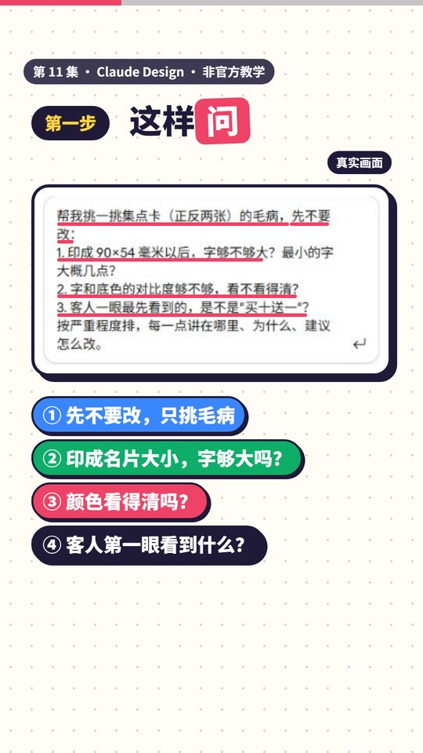
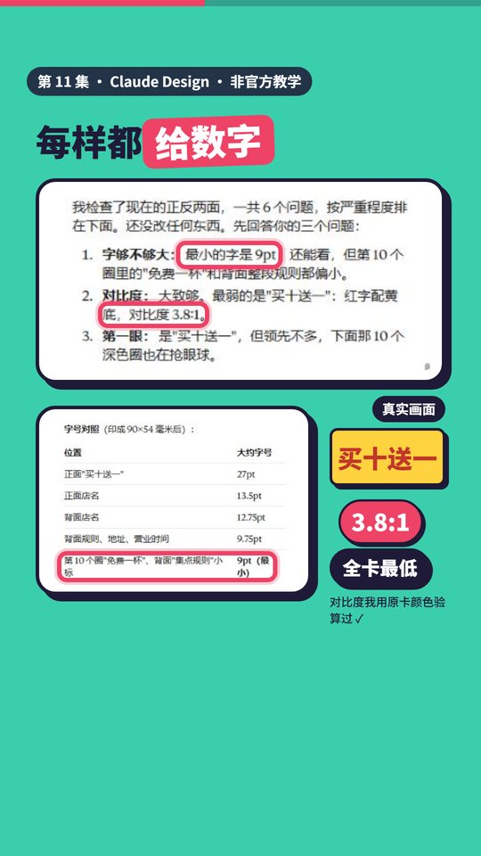
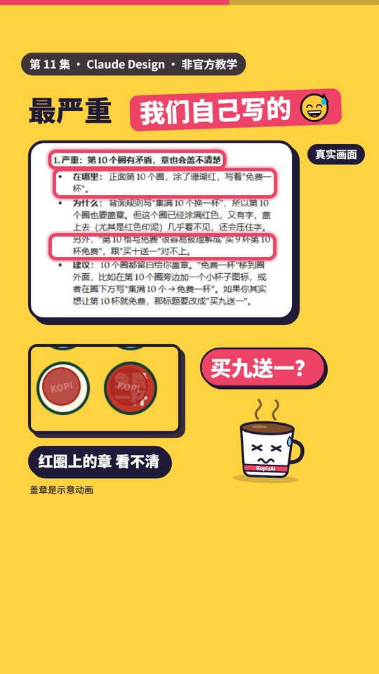
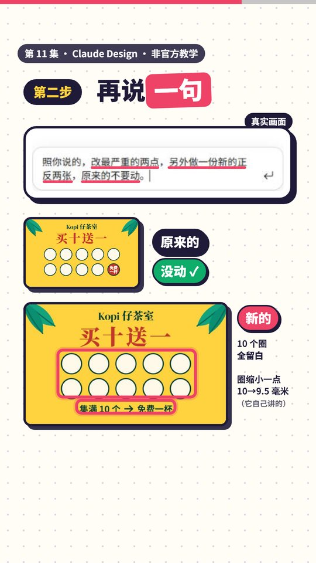
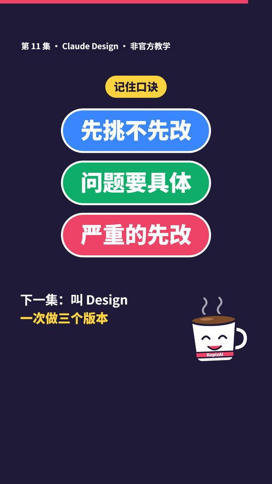

第 11 集 · 叫 Design 帮你挑毛病
一句话： 先叫 Design 挑毛病、先不要改，问它具体的问题（字够不够大、颜色看不看得清、第一眼看到什么），再叫它改最严重的那几点，另外做一份。
对照官方文档和真实界面核对日期：2026-11-22 ｜ 时长 50 秒 ｜ 非官方教学
为什么先挑不先改
官方说明的小技巧里有一条：叫 Claude 给意见，它会检查可读性、对比度、信息层次和好不好用，把它当设计伙伴，不只是生成器。另一条是：意见要讲具体。所以我们不问"好不好看"，问三个具体的问题，还叫它先不要改：先看清楚有什么毛病，再决定改哪几个。
跟着做
第一步：先不要改，问它具体的问题（视频 00:05）
我们拿上一集做的集点卡来试，在同一个设计里问：
- 先不要改，只挑毛病
- 字够不够大：印成名片大小（90×54 毫米）以后，最小的字大概几点？
- 颜色看不看得清：字和底色的对比度够不够？
- 第一眼：客人一眼最先看到的，是不是最重要的那句？
最后叫它按严重程度排，每一点讲在哪里、为什么、建议怎么改。
可以直接复制（换成你的东西）：
帮我挑一挑＿＿（哪一张）的毛病，先不要改：
1. 印成＿＿（尺寸）以后，字够不够大？最小的字大概几点？
2. 字和底色的对比度够不够，看不看得清？
3. 客人一眼最先看到的，是不是"＿＿"（最重要的那句）？
按严重程度排，每一点讲在哪里、为什么、建议怎么改。

结果：每一样都给数字（视频 00:15）
我们这次大约一分钟就回完，什么都没改。它一共挑出 6 个毛病，先回答三个问题：
- 字号：最小的字是 9pt（第 10 个圈里的"免费一杯"和背面的"集点规则"小标），还列了一张字号对照表。
- 对比度：大致够，最弱的是"买十送一"红字配黄底，3.8:1。
- 第一眼：是"买十送一"，但领先不多，下面 10 个深色圈也在抢眼球。
对比度我们用原卡的颜色自己算过一遍，跟它说的对得上。字号是它估的，我们没有另外验证。

最严重的一个，是我们自己写的（视频 00:22）
上一集的提示词写了"第 10 个圈写'免费一杯'"，结果第 10 个圈涂满红色又有字：章盖上去看不清，还会压住字；而且"第 10 格写免费"很容易被看成"买九送一"，跟"买十送一"对不上。挑毛病连你自己的要求都会检查。

画面里的盖章是动画示意，不是 Design 做的。
第二步：改最严重的两点，另外做一份（视频 00:31）
照你说的，改最严重的两点，另外做一份新的正反两张，原来的不要动。
一分多钟做好。新版放在原来那张下面，原来的没动：
- 10 个圈全部留白，盖上去的章看得清楚。
- "免费一杯"移到圈下面，变成一整行"集满 10 个 → 免费一杯"。
它还自己说：为了腾出这一行，圈从大约 10 毫米缩到 9.5 毫米，印章大于 9 毫米要先跟它讲。其他几个比较轻的毛病它没动，要改再跟它说。

口诀
先挑不先改，问题要具体，严重的先改。

时间点
| 时间 | 内容 |
|---|---|
| 00:00 | 上一集的集点卡，挑出 6 个毛病 |
| 00:05 | 这样问：先不要改，问三个具体的问题 |
| 00:15 | 每一样都给数字：9pt、3.8:1 |
| 00:22 | 最严重：第 10 个圈 |
| 00:31 | 再说一句：改两点，另外做一份 |
| 00:39 | 口诀，下一集预告 |
顺便知道
- 它另外还提了一点：店名离上边只有大约 3 毫米，卡也没有留出血，印之前最好把边距加到 4 毫米左右，再加 2–3 毫米出血（第 10 集讲过出血）。
- "另外做一份，原来的不要动"第 7、9、10 集都用过：改坏了也还有原来那份。
- 官方说明现在写：Claude Design 在任何对话里都能打开；单独的 claude.ai/design 网址 2026 年 12 月 14 日关闭。我们一直是在对话里用 Design。
- 店名、地址是示范资料，不是真的店。
来源：Claude 帮助中心《Get started with Claude Design》，以及 2026 年 11 月 claude.ai 的实际操作 https://support.claude.com/en/articles/14604416-get-started-with-claude-design